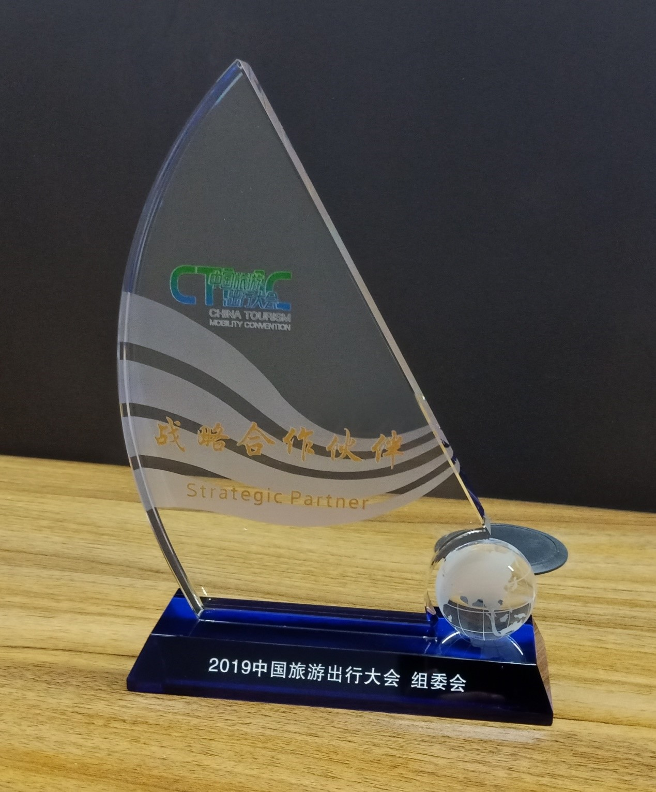
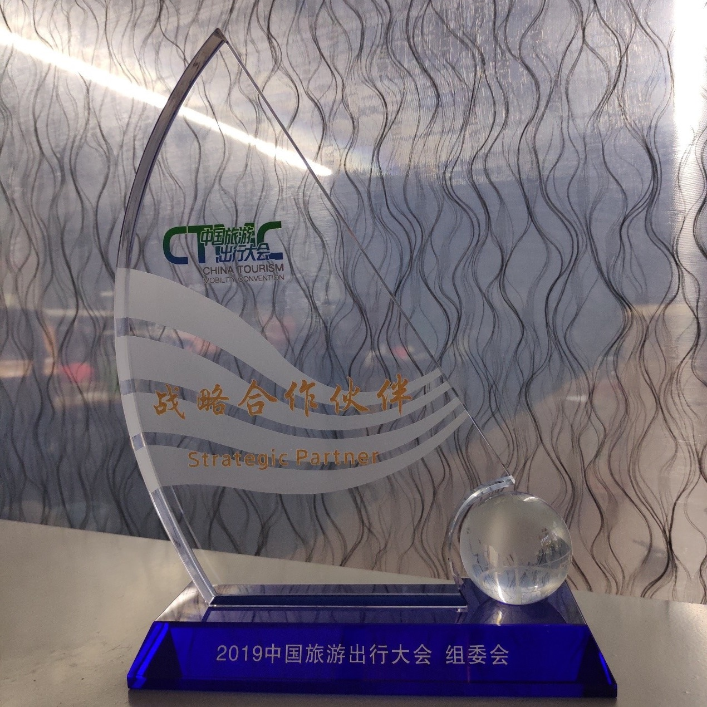

发布日期：2019-11-13
2019年11月9-13日，珠海德百祺科技有限公司出席了在中国桂林举行的2019中国旅游大会
查看全文珠海德百祺科技有限公司在2019年11月9-13日出席在中国桂林举行的2019中国旅游大会，大会以“跨界互联 多元互通”为主题，旨在进一步推进旅游与交通融合发展，夯实旅游与交通跨领域沟通，促进旅游出行产业高端交流、合作对接和全产业链发展。珠海德百祺科技有限公司有幸参与此次大会并发表主题演讲“物联网位置服务在旅游出行中的应用及发展”，同时成为中国旅游出行大会的战略合作伙伴。
 